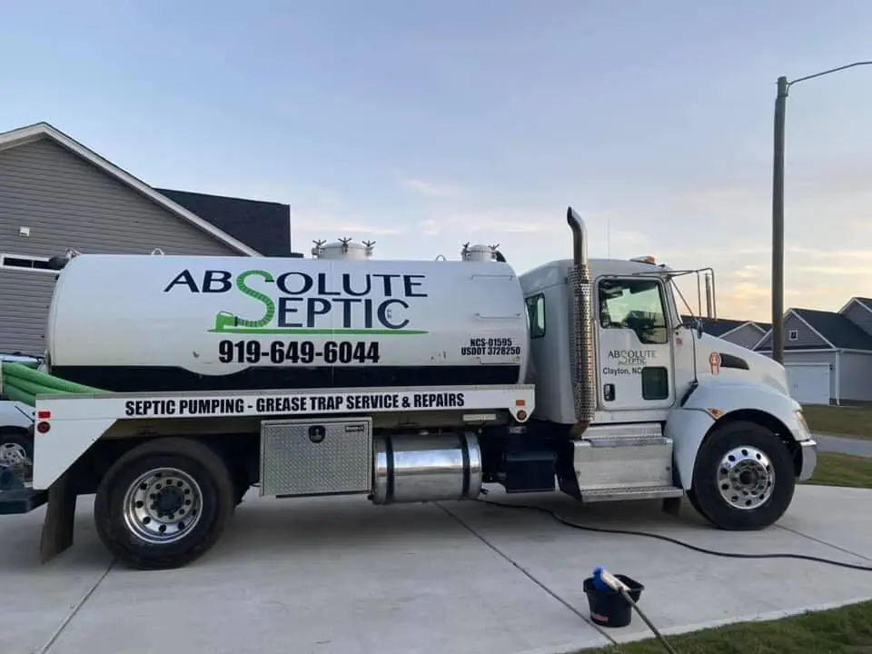

Home / About
About
Started with $4,000 in the bank.
Absolute Septic is family owned and run by Cody Staricha out of Clayton.

Cody’s story
Cody started Absolute Septic with just $4,000 in his bank account, driven by a desire to help others and a commitment to hard work. He enjoys site work because it helps clients reach their goals, whether that is building a new home or getting a septic system in. His crew takes the extra time to do it right, and the aim is to leave every property the way they found it.
Adapted from the About page on Absolute Septic’s old website.
Placeholder a photo of Cody, how many trucks and people are on the crew now, and whether the senior and first responder discount from the old site still stands.
On the record
- Aug 12, 2021
- Absolute Septic, LLC formed, per BBB
- Apr 7, 2022
- Cody certified as an NC onsite wastewater installer, Level II, #9043. On the state list effective September 26, 2026
- NCS‑01595
- Printed on the truck and the old site TODO verify
- 2 locations
- Smithfield and Garner, per BBB. Yard in Clayton, per the state list
- Apr 23, 2026
- Forestry mulching added, per Cody’s Google post
Sources: NCOWCICB certification list, BBB, Google.